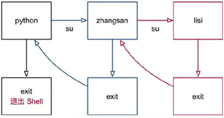

用户(组)权限管理
1. 用户组管理
用户组可以方便批量管理用户，每个用户必须属于一个组或多个组。为一个组赋权限后，组中所有用户自动获得相应权限
| 命令 | 说明 |
|---|---|
groupadd [-options] GROUP |
添加用户组 |
groupdel [-options] GROUP |
删除用户组 |
cat /etc/group |
查看系统所有用户组 |
chgrp [-options] GROUP FILE |
修改文件或目录所在组。-R表示递归修改 |
gpasswd -options GROUP |
管理用户组。-a表示向组中添加用户,-d表示从组中移除用户 |
# 添加dev用户组
$ sudo groupadd dev
# 删除dev用户组
$ sudo groupdel dev
# 查看系统用户组
$ cat /etc/group
# 将Code目录及其子目录和文件所在组递归修改为dev
$ sudo chgrp -R dev Code
# 将colin用户添加到sudo组中
$ sudo gpasswd -a colin sudo
# 将colin用户从sudo组中移除
$ sudo gpasswd -d colin sudo
添加用户到组中除了使用gpasswd -a user group命令，也可以使用usermod -a -G group user。
2. 用户管理
| 命令 | 说明 |
|---|---|
su [-options] [user] |
切换用户 |
useradd [-options] user |
创建新用户 |
passwd [-options] [user] |
设置用户密码 |
userdel [-options] [user] |
删除用户。-r可以连同删除用户主目录 |
cat /etc/passwd |
查看系统所有用户信息 |
id [-options] [user] |
查看用户和所在组信息 |
who [-options] |
查看当前登录到系统的活跃用户 |
whoami |
查看当前用户名 |
usermod [-options] user |
修改用户信息 |
2.1 root 用户
- Linux系统中
root账号通常用于系统维护和管理，其对操作系统所有资源 具有所有访问权限 - Linux安装过程中，系统会自动创建一个用户账号，而这个默认用户称为“标准用户”
- 标准用户执行命令没有权限时，可以在命令开始添加
sudo来执行。 sudo命令用来以其他身份来执行命令，预设的身份为root- 用户使用
sudo时需要输入密码，密码5分钟有效 - 只有
sudo用户组中用户才可使用sudo,未经授权用户使用sudo会发警告邮件给管理员
$ sudo rm -r Application # 以管理员身份删除Application目录
若要切换到root用户，参阅 切换到root用户
2.2 切换用户
# 命令格式
# 切换用户
$ su [-options] [user]
# 退出当前登录用户
$ exit
options为-或-l会在切换用户时同时切换到用户主目录- 以下命令都可以切换到root用户
$ su $ sudo -i 切换和退出用户示意图：

# 切换test用户并切换到其主目录(/home/test)
$ su - test
# 退出test用户
$ exit
# 切换root用户
$ su
2.3 创建用户
1) useradd 命令
# 命令格式
$ useradd [-options] user
| options | 含义 |
|---|---|
-m |
自动创建用户主目录 |
-g |
指定用户所属组。若不指定会自动创建一个用户组 |
-d |
指定用户主目录为现有目录 |
创建用户最好添加-m创建用户主目录，否则后续创建目录、设置权限非常繁琐。如果忘记，最简单的方法就是立即删除用户，重新创建
通过-d指定用户主目录后，如果用户可能对此目录没有权限则需要赋予相应权限，比如添加到所有者组或者修改目录所有者。
# 创建colin用户并分配到dev组，同时创建用户主目录
$ sudo useradd -m -g dev colin
2) passwd 命令
# 命令格式
$ passwd [-options] [user]
passwd不指定用户默认给当前用户修改密码- 创建用户后必须设置用密码之后才可以登录
# 给colin设置密码
$ passwd colin
2.4 查看用户信息
1) passwd 文件
/et/passwd文件存在的是所有用户的信息，每条记录是一个用户，记录7个字段，以":"分割，形如
$ cat /etc/passwd
# 结果示例
# colin:x:1000:1000:Colin Chang,,,:/home/colin:/bin/bash
# test:x:1001:1001::/home/test:/bin/sh
| 用户名 | 密码 | UID | GID | 用户全名或本地账号 | 主目录 | Shell |
|---|---|---|---|---|---|---|
| colin | x | 1000 | 1000 | Colin Chang,,, | /home/colin | /bin/bash |
| test | x | 1001 | 1001 | /home/test | /bin/sh |
- 密码
x表示密码加密不显示，即使没有设置密码 - UID是用户唯一的ID标识
- GID是用户主组唯一的ID标识
- Shell表示用户登录时使用的终端。可修改shell
- 没有内容的项全部留空
2) id 命令
# 命令格式
$ id [-options] [user]
id命令可以快速方便的查看用户和所在组信息。不指定用户默认显示当前用户信息。命令执行结果示例如下：
# 查看colin用户信息
$ id colin
# 执行结果如下
# uid=1000(colin) gid=1000(colin) groups=1000(colin),4(adm),24(cdrom),27(sudo)
groups列出了用户的所有所在组(主组+附加组)。gid为主组ID
3) 其他相关命令
# 查看登录到系统的活跃用户
$ who
# 查看当前当前登录用户
$ whoami
2.5 修改用户信息
2.5.1 主组与附加组
一个用户可以隶属与多个组。其中至少包含一个主组和任意多个附加组。
- 主组：通常在用户创建时指定。主组ID在
/etc/passwd的第四列GID。通过id命令快速查看主组信息 - 附加组：用于指定 用户附加权限。在
/etc/group中最后一列表示该组所有用户列表。通过id命令结果groups可以快速查看所有所在组(主组+附加组)
2.5.2 usermod 命令
# 命令格式
$ usermod [-options] user
usermod命令可以修改用户信息，如用户主组、附加组、主目录、shell等。
| options | 含义 |
|---|---|
-g |
修改用户主组。用户创建后一般不会修改主组 |
-G |
修改用户附加组。一般配合-a来完成向其它组添加 |
-s |
修改shell |
1) 修改组
- 修改用户组后需要重新登录才能生效
- useradd添加的用户默认无法以
root身份执行命令。若要使用可以将用户附加到sudo中
# 将colin用户附加到sudo组中
$ sudo usermod -a -G sudo colin
2) 修改 Shell
- Ubuntu中
useradd添加的用户默认shell为dash(/bin/sh)，而系统用户使用的shell默认为bash(/bin/bash)。bash在颜色渲染和使用上更加方便。 - 修改用户Shell后需要重新登录方可生效
# 修改test用户的shell为bash
$ sudo usermod -s /bin/bash test